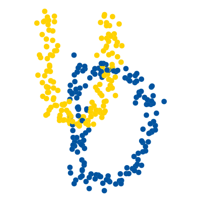

Data Science 1

Preface
This book covers material for Math 219, Data Science 1, at the University of Delaware. It should be considered prepublication and may have errors.
See license file for rights information.
This site was made with Quatro. To learn more about Quarto books visit https://quarto.org/docs/books.
Prerequisites
Prior experience with single-variable calculus (basic differentiation and integration) and with base Python are expected.